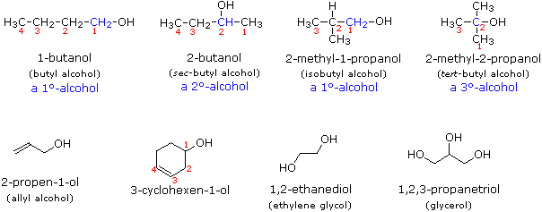
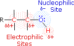
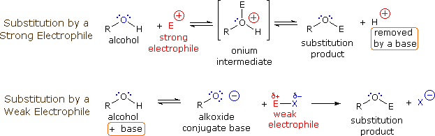
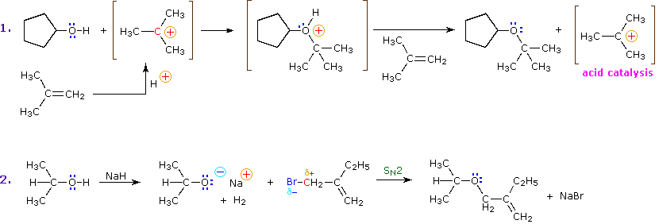
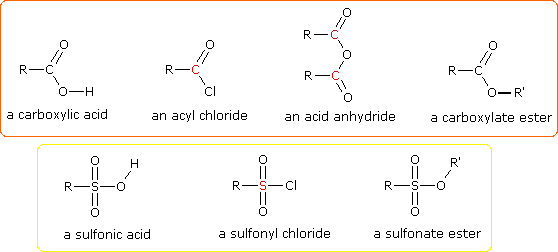

2 R–O–H + 2 Na  2 R–O(–)Na(+) + H2 2 R–O(–)Na(+) + H2 |
R–O–H + D2O  R–O–D + D–O–H R–O–D + D–O–H |
Alcohol Nomenclature |
|---|
In the IUPAC system of nomenclature, functional groups are normally designated in one of two ways. The presence of the function may be indicated by a characteristic suffix and a location number. This is common for the carbon-carbon double and triple bonds which have the respective suffixes ene and yne. Halogens, on the other hand, do not have a suffix and are named as substituents, for example: (CH3)2C=CHCHClCH3 is 4-chloro-2-methyl-2-pentene. If you are uncertain about the IUPAC rules for nomenclature you should review them now.
Alcohols are usually named by the first procedure and are designated by an ol suffix, as in ethanol, CH3CH2OH (note that a locator number is not needed on a two-carbon chain). On longer chains the location of the hydroxyl group determines chain numbering. For example: (CH3)2C=CHCH(OH)CH3 is 4-methyl-3-penten-2-ol. Other examples of IUPAC nomenclature are shown below, together with the common names often used for some of the simpler compounds. For the mono-functional alcohols, this common system consists of naming the alkyl group followed by the word alcohol. Alcohols may also be classified as primary, 1º, secondary, 2º & tertiary, 3º, in the same manner as alkyl halides. This terminology refers to alkyl substitution of the carbon atom bearing the hydroxyl group (colored blue in the illustration).

Many functional groups have a characteristic suffix designator, and only one such suffix (other than "ene" and "yne") may be used in a name. When the hydroxyl functional group is present together with a function of higher nomenclature priority, it must be cited and located by the prefix hydroxy and an appropriate number. For example, lactic acid has the IUPAC name 2-hydroxypropanoic acid.
Compounds incorporating a C–S–H functional group are named thiols or mercaptans. The IUPAC name of (CH3)3C–SH is 2-methyl-2-propanethiol, commonly called tert-butyl mercaptan. The chemistry of thiols will not be described here, other than to note that they are stronger acids and more powerful nucleophiles than alcohols.
Reactions of Alcohols |
|---|

The functional group of the alcohols is the hydroxyl group, –OH. Unlike the alkyl halides, this group has two reactive covalent bonds, the C–O bond and the O–H bond. The electronegativity of oxygen is substantially greater than that of carbon and hydrogen. Consequently, the covalent bonds of this functional group are polarized so that oxygen is electron rich and both carbon and hydrogen are electrophilic, as shown in the drawing on the right. Indeed, the dipolar nature of the O–H bond is such that alcohols are much stronger acids than alkanes (by roughly 1030 times), and nearly that much stronger than ethers (oxygen substituted alkanes that do not have an O–H group). The most reactive site in an alcohol molecule is the hydroxyl group, despite the fact that the O–H bond strength is significantly greater than that of the C–C, C–H and C–O bonds, demonstrating again the difference between thermodynamic and chemical stability.
For a discussion of how acidity is influenced by molecular structure Click Here. |
|---|
Electrophilic Substitution at Oxygen |
|---|
Because of its enhanced acidity, the hydrogen atom on the hydroxyl group is rather easily replaced by other substituents. A simple example is the facile reaction of simple alcohols with sodium (and sodium hydride), as described in the first equation below. Another such substitution reaction is the isotopic exchange that occurs on mixing an alcohol with deuterium oxide (heavy water). This exchange, which is catalyzed by acid or base, is very fast under normal conditions, since it is difficult to avoid traces of such catalysts in most experimental systems.
| 2 R–O–H + 2 Na 2 R–O(–)Na(+) + H2 |
| R–O–H + D2O R–O–D + D–O–H |
The mechanism by which many substitution reactions of this kind take place is straightforward. The oxygen atom of an alcohol is nucleophilic and is therefore prone to attack by electrophiles. The resulting "onium" intermediate then loses a proton to a base, giving the substitution product. If a strong electrophile is not present, the nucleophilicity of the oxygen may be enhanced by conversion to its conjugate base (an alkoxide). This powerful nucleophile then attacks the weak electrophile. These two variations of the substitution mechanism are illustrated in the following diagram.

The preparation of tert-butyl hypochlorite from tert-butyl alcohol is an example of electrophilic halogenation of oxygen, but this reaction is restricted to 3º-alcohols because 1º and 2º-hypochlorites lose HCl to give aldehydes and ketones. In the following equation the electrophile may be regarded as Cl(+).
(CH3)3C–O–H + Cl2 + NaOH (CH3)3C–O–Cl + NaCl + H2O
Alkyl substitution of the hydroxyl group leads to ethers. This reaction provides examples of both strong electrophilic substitution (first equation below), and weak electrophilic substitution (second equation). The latter SN2 reaction is known as the Williamson Ether Synthesis, and is generally used only with 1º-alkyl halide reactants because the strong alkoxide base leads to E2 elimination of 2º and 3º-alkyl halides.

One of the most important substitution reactions at oxygen is ester formation resulting from the reaction of alcohols with electrophilic derivatives of carboxylic and sulfonic acids. The following illustration displays the general formulas of these reagents and their ester products, in which the R'–O– group represents the alcohol moiety. The electrophilic atom in the acid chlorides and anhydrides is colored red. Examples of specific esterification reactions may be selected from the menu below the diagram, and will be displayed in the same space.
